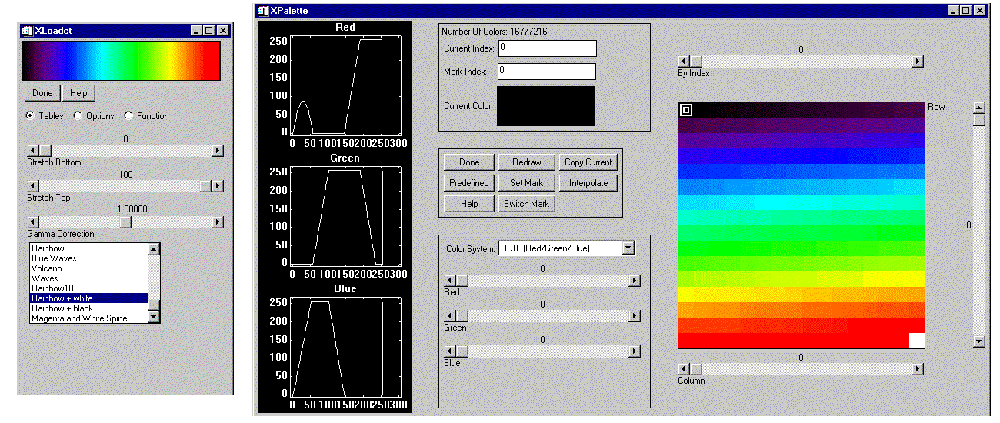
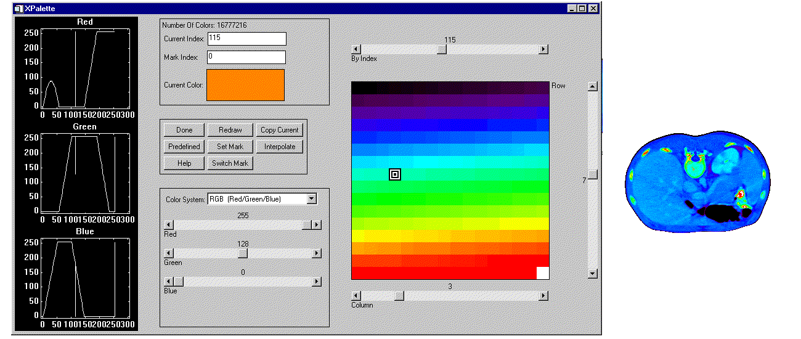
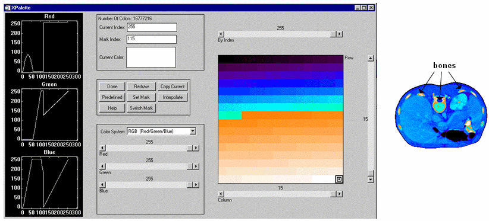

CT Scan Image with Grayscale Color Table

The XPALETTE procedure is a u tility that displays a widget interface that allows interactive creation and modification of color tables using the RGB, CMY, HSV, or HLS color systems. This procedure can interpolate the space between color indices (to create smooth color transitions) or edit individual colors.
This routine is written in the IDL language. Its source code can be found in the file xpalette.pro in the lib/utilities subdirectory of the IDL distribution.
Calling XPALETTE causes a graphical interface to appear. The elements of this interface are described below.
Three plots show the current red, green, and blue vectors.
The center of the XPALETTE widget is a status region containing:
The total number of colors.
The current color index. XPALETTE allows changing one color at a time. This color is known as the “current color” and is indicated in the color spectrum display with a special marker.
The current mark index. The mark is used to remember a color index. Click the “Set Mark Button” to make the current color index the mark index.
A sample of the current color. The special marker used in the color spectrum display prevents the user from seeing the color of the current index, but it is visible here.
A panel of 8 buttons control common XPALETTE functions:
Done: Click this button to exit XPALETTE. The new color tables are saved in the COLORS common block and loaded to the display.
Predefined: Click this button to start XLOADCT, allowing selection of one of the predefined color tables. Note that when you change the color map via XLOADCT, XPALETTE is not always able to keep its display accurate. This problem can be overcome by pressing the XPALETTE “Redraw” button after changing the colortable via XLOADCT.
Help: Click this button to display help information.
Redraw: Click this button to redraw the display using the current state of the color map.
Set Mark: Click this button to set the value of the mark index to the current color index.
Switch Mark: Click this button to exchange the mark and the current index.
Copy Current: Click this button to make every color lying between the current index and the mark index (inclusive) the same color as the current color.
Interpolate: Click this button to smoothly interpolate colors between the current index and the mark index.
This section of the interface allows you to select the color system used to modify individual colors. The “Select Color System” pulldown menu lets you select from four different systems—RGB, CMY, HSV, and HLS. Depending upon the current system, 3 sliders below the pulldown menu allow you to alter the current color.
A display on the right side of the XPALETTE interface shows the current color map as a series of squares. Color index 0 is at the upper left. The color index increases monotonically by rows going left to right and top to bottom. The current color index is indicated by a special marker symbol. There are 4 ways to change the current color:
Click on any square in the color map display.
Use the “By Index” slider to move to the desired color index.
Use the “Row” Slider to move the marker vertically.
Use the “Column” Slider to move the marker horizontally.
XPALETTE uses two colors from the current color table as drawing foreground and background colors. These are used for the RGB plots on the left, and the current index marker on the right. This means that if the user set these two colors to the same value, the XPALETTE display could become unreadable (like writing on black paper with black ink). XPALETTE minimizes this possibility by noting changes to the color map and always using the brightest available color for the foreground color and the darkest for the background. Thus, the only way to make XPALETTE’s display unreadable is to set the entire color map to a single color, which is highly unlikely. The only side effect of this policy is that you may notice XPALETTE redrawing the entire display after you’ve modified the current color. This simply means that the change has made XPALETTE pick new drawing colors.
XPALETTE [, / BLOCK ] [, GROUP = widget_id ] [, UPDATECALLBACK =‘ procedure_name ’ [, UPDATECBDATA = value ]]
None
Set this keyword to have XMANAGER block when this application is registered. By default, BLOCK is set equal to zero, providing access to the command line if active command line processing is available. Note that setting BLOCK=1 will cause all widget applications to block, not just this application. For more information, see the documentation for the NO_BLOCK keyword to XMANAGER.
Note: Only the outermost call to XMANAGER can block. Therefore, to have XPALETTE block, any earlier calls to XMANAGER must have been called with the NO_BLOCK keyword. See the documentation for the NO_BLOCK keyword to XMANAGER for an example.
The widget ID of the widget that calls XPALETTE. When this ID is specified, a death of the caller results in a death of XPALETTE.
Set this keyword to a string containing the name of a user-supplied procedure that will be called when the color table is updated by XLOADCT. The procedure may optionally accept a keyword called DATA, which will be automatically set to the value specified by the optional UPDATECBDATA keyword.
Set this keyword to a value of any type. It will be passed via the DATA keyword to the user-supplied procedure specified via the UPDATECALLBACK keyword, if any. If the UPDATECBDATA keyword is not set the value accepted by the DATA keyword to the procedure specified by UPDATECALLBACK will be undefined.
This example uses a single color (orange) to highlight pixels within the spine of the CT scan image. Then, starting with the entry that was changed to orange, a range of entries is selected and replaced with a ramp from orange to white to highlight the bones within this image. Complete the following steps for a detailed description of the process.
Example Code: See usingxpalette. pro in the examples/doc/image subdirectory of the IDL installation directory for code that duplicates this example. Run the example procedure by entering usingxpalette at the IDL command prompt or view the file in an IDL Editor window by entering .EDIT usingxpalette.pro . The BLOCK keyword is set when using XPALETTE to force the example routine to wait until the Done button is pressed to continue. If the BLOCK keyword was not set, the example routine would produce all of the displays at once and then end.
| 1. | Determine the path to the ctscan.dat binary file: |
ctscanFile = FILEPATH('ctscan.dat', $
SUBDIRECTORY = ['examples', 'data'])
| 2. | Initialize the image size parameter: |
ctscanSize = [256, 256]
| 3. | Import the image from the file: |
ctscanImage = READ_BINARY(ctscanFile, $
DATA_DIMS = ctscanSize)
| 4. | If you are running IDL on a TrueColor display, set the DECOMPOSED keyword to the DEVICE command to zero before your first color table related routine is used within an IDL session or program. |
DEVICE, DECOMPOSED = 0
| 5. |
|
| 6. | Display the image from the ctscan.dat file with the B-W LINEAR color table: |
LOADCT, 0
WINDOW, 0, TITLE = 'ctscan.dat', $
XSIZE = ctscanSize[0], YSIZE = ctscanSize[1]
TV, ctscanImage
As shown in the following figure, the B-W LINEAR color table does not distinguish all of the aspects of this image. The XPALETTE utility can be used to change the color table.
|
|
| 7. | Open the XPALETTE utility: |
XPALETTE
Select the Predefined button in the XPALETTE utility to change the color table to Rainbow + white.
Click on the Done button after you select the Rainbow + white color table in XLOADCT and then click on the Done button in XPALETTE.
The following figure shows the resulting XPALETTE and XLOADCT displays.
|
 |
| 8. | Now redisplay the image to show it with the Rainbow + white color table: |
TV, ctscanImage
Your display should be similar to the following figure.
|
|
You can use XPALETTE to change a single color within the current color table. For example, you can change the color at index number 115 to orange.
| 9. | Open XPALETTE and click on the 115th index (in column 3 and row 7): |
XPALETTE
Change its color to orange by moving the RGB (red, green, and blue) sliders (Orange is made up of 255 red, 128 green, and 0 blue)
Click on the Done button after changing the Red , Green , and Blue sliders.
Use TV to redisplay the image to include the last changes made in the XPALETTE utility:
TV, ctscanImage
The orange values now highlight some areas of the spine, kidney, and bones as shown in the following figure.
|
 |
You can highlight the bones even further by interpolating a new range in between the orange and white indices.
| 10. | Open XPALETTE: |
Click on the 115th index and select the S et Mark button.
Click on the highest index (which is usually 255 but it could be less) and then select the Interpolate button.
To see the result of this interpolation within XPALETTE, click on the Redraw button.
Click Done and redisplay the image:
TV, ctscanImage
The following figure displays the image using the modified color table.
|
 |
|
Pre-4.0 |
Introduced |